Algorithmus (mwtest)
Betrachten Sie die zwei unabhängigen Beispiele 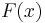 und 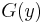 mit der Größe 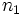 und 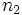. Die Beispieldaten werden als 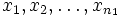 bzw. 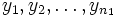 bezeichnet.
Die Nullhypothese 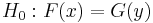 lautet, dass die zwei Verteilungen gleich sind. Dies wird gegen die Alternativhypothese 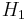 getestet, die besagt:
- 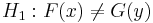; oder
- 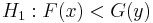, die 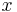 tendieren dazu, größer zu sein als die 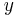; oder
 , die tendieren dazu, kleiner zu sein als die .
, die tendieren dazu, kleiner zu sein als die .
Das Testverfahren beinhaltet die folgenden Schritte:
- Kombinieren Sie 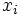 und 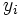 in einer Gruppe.
- Ordnen Sie die Ränge in aufsteigender Ordnung. Verbindungen erhalten den Durchschnitt ihrer Ränge. Angenommen
 sind die Ränge, die zugewiesen sind, für 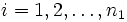, und die Ränge, die zugewiesen sind, für 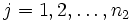.
sind die Ränge, die zugewiesen sind, für 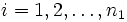, und die Ränge, die zugewiesen sind, für 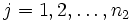.
- Berechnen Sie die Summe der Ränge:
- 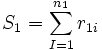, und 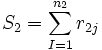
- Die Teststatistik 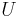 wird folgendermaßen definiert:
- 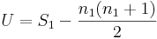
- Die approximative Teststatistik der Normalverteilung 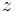 wird berechnet wie folgt:
- 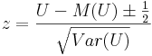
wobei
- 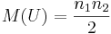
und
- 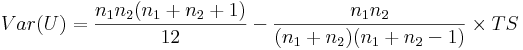
wobei
- 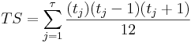 sein wird.
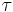 ist die Anzahl der Verbindungen in der Stichprobe und 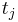 die Anzahl der Verbindungen in der j-ten Gruppe.
Beachten Sie, dass, sollte es keine Verbindungen geben, die Varianz von reduziert wird auf 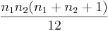
Weitere Einzelheiten zu dem Algorithmus finden Sie unter nag_mann_whitney (g08amc).